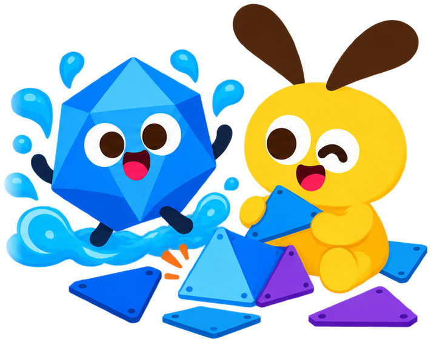
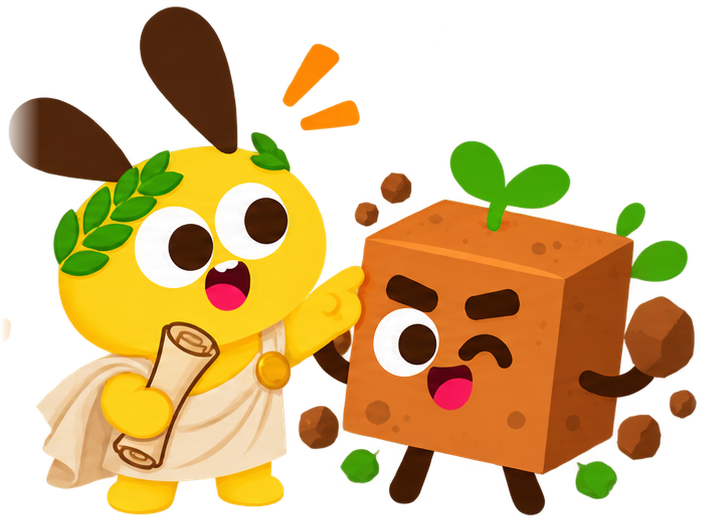
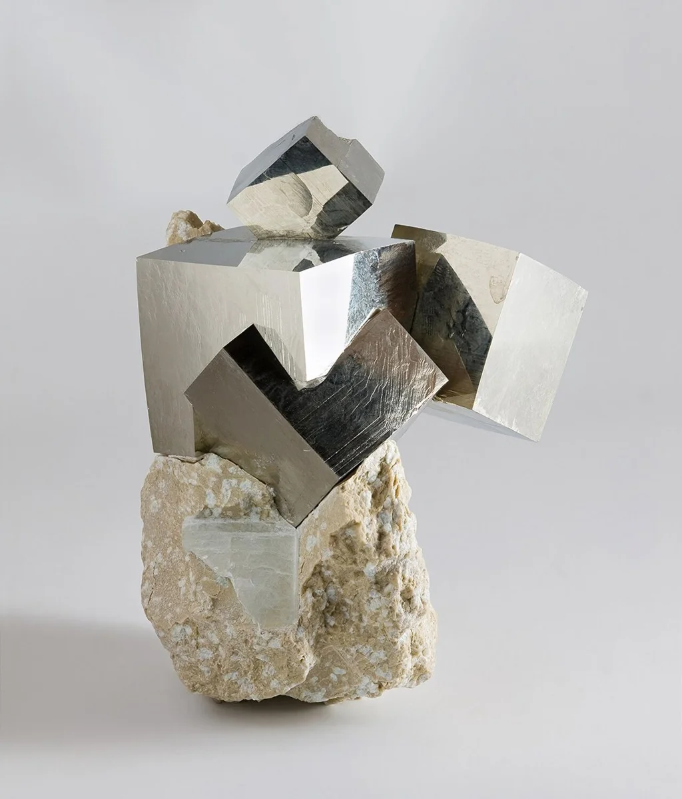
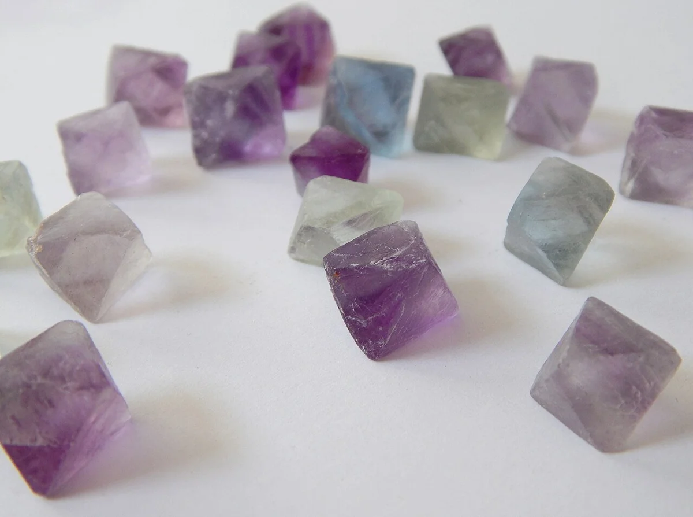

柏拉图多面体

柏拉图多面体
为什么叫柏拉图多面体？
毕达哥拉斯学派我们认识了其中几种！
公元前 6 世纪泰阿泰德我证明：只有 5 种！
公元前 4 世纪柏拉图把它们写进《蒂迈欧篇》
约公元前 360 年欧几里得写进《几何原本》再证明
约公元前 300 年柏拉图多面体，就是这 5 位
正四面体
立方体
正八面体
正二十面体
正十二面体
看面每个面都一模一样
看顶点每个角围着的面一样多
柏拉图的大胆猜想：世界是搭出来的？
亲手拼搭多面体
1
动手搭①：正四面体
动手搭②：正八面体
动手搭③：正二十面体

为什么只有 5 种正多面体？
2数一数：每个角围着几个三角形？
猜想：几个三角形能鼓起来？
猜想：几个正方形能鼓起来？
猜想：几个正五边形能鼓起来？
猜想：3 个正六边形能鼓起来吗？
能鼓起来的，正好 5 种
3 个↓
正四面体
4 个↓
正八面体
5 个↓
正二十面体
3 个↓
立方体
3 个↓
正十二面体
知识拓展：密铺
把发现带到生活里
3
这两块石头，像哪位伙伴？


黄铁矿
萤石
立方体
正八面体
数一数：顶点、棱和面
| 伙伴 | 顶点 V | 棱 E | 面 F | V+F−E |
|---|---|---|---|---|
| 正四面体 | 4 | 6 | 4 | 2 |
| 正八面体 | 6 | 12 | 8 | 2 |
| 正二十面体 | 12 | 30 | 20 | 2 |
知识拓展：欧拉定理
V顶点+F面−E棱=2
课后任务
1
拼一拼：用中蓝棍拼出立方体和正十二面体。
2
查一查：V + F − E = 2，对所有多面体都成立吗？